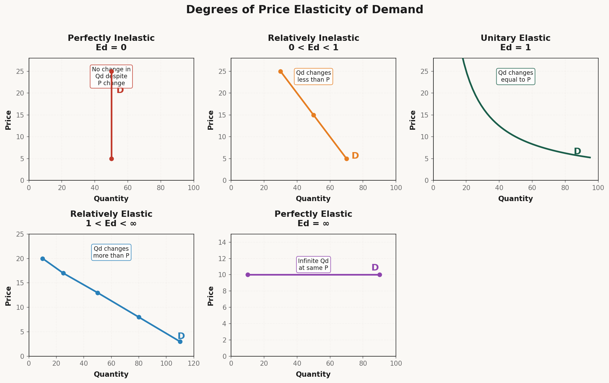
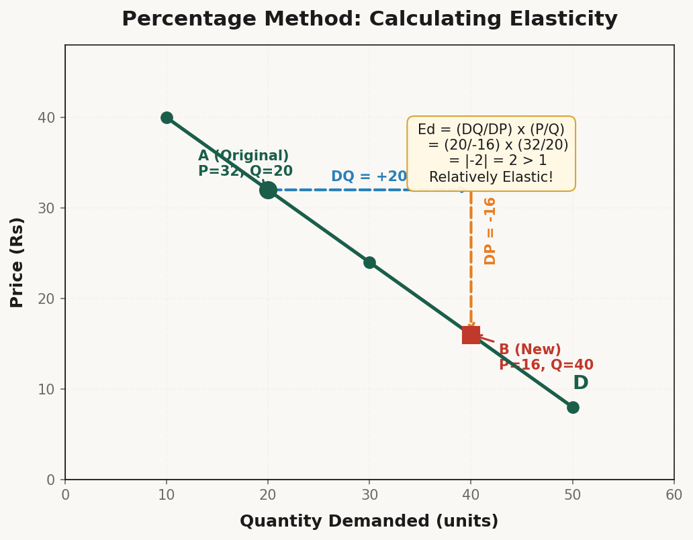
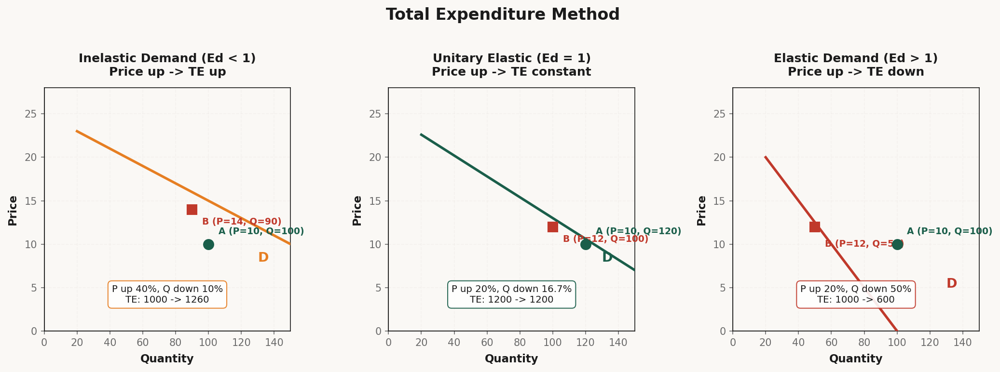
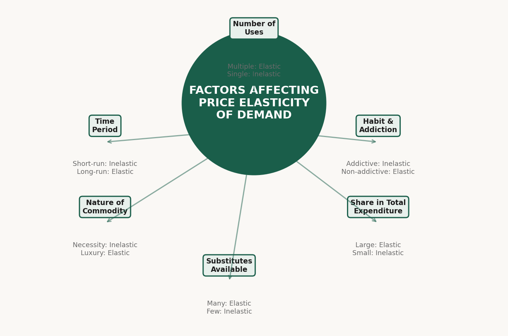

Elasticity of Demand
Measuring the degree of responsiveness of quantity demanded — how much does demand change when price, income, or related goods' prices change?
1. Meaning of Elasticity of Demand
The Big Idea:
In Chapter 3 (Demand), we studied the Law of Demand — Price ↑ → Demand ↓. But we never asked HOW MUCH demand changes when price changes.
Elasticity of Demand measures the degree of responsiveness of quantity demanded to changes in its determinants.
Real Life Understanding (From Lecture):
"Pichle chapter mein humne pada tha ki price badhne pe demand girti hai aur price girne pe demand badhti hai. Iss baar padhenge ki uska magnitude kya hai — kitna badhta hai, kitna girti hai?"
Simple Example:
AC ka price ₹30,000 se ₹35,000 ho gaya → Log nahi kharidenge (High impact — Elastic)
Sui (needle) ka price ₹2 se ₹4 ho gaya → Koi farak nahi padta (Low impact — Inelastic)
Definition:
Elasticity of Demand = The ratio of percentage change in quantity demanded to percentage change in the determinant (price, income, etc.)
2. Types of Elasticity of Demand
There are three types of elasticity of demand based on which factor changes:
| Type | What Changes? | Measures |
|---|---|---|
| Price Elasticity of Demand | Price of the good itself | How much demand responds to price change |
| Income Elasticity of Demand | Consumer's income | How much demand responds to income change |
| Cross Elasticity of Demand | Price of related goods | How much demand responds to price of substitutes/complements |
3. Price Elasticity of Demand — Definition & Formula
Definition:
Price Elasticity of Demand (Ed) is the percentage change in quantity demanded divided by the percentage change in price.
Formula:
Ed = Percentage Change in Quantity Demanded / Percentage Change in Price
Mathematical Expression:
Ed = (%ΔQ) / (%ΔP) where: %ΔQ = (Change in Q / Original Q) × 100 %ΔP = (Change in P / Original P) × 100
More Detailed Formula:
Ed = (ΔQ / Q) × 100 / (ΔP / P) × 100 Simplifies to: Ed = (ΔQ / ΔP) × (P / Q)
Where:
- ΔQ = Change in quantity demanded
- ΔP = Change in price
- Q = Original quantity
- P = Original price
Important Note about Sign:
Since price and quantity have an inverse relationship (Law of Demand), Ed is always negative. But in exams, we take the absolute value (ignoring the negative sign).
Example Calculation:
| Situation | Price | Quantity |
|---|---|---|
| Original | ₹10 | 100 units |
| New | ₹8 | 140 units |
%ΔQ = (140 - 100) / 100 × 100 = 40% %ΔP = (8 - 10) / 10 × 100 = -20% Ed = 40% / -20% = |-2| = 2 Since |Ed| > 1 → Relatively Elastic Demand
4. Degrees of Price Elasticity of Demand
There are five degrees of price elasticity:
| Degree | Value | Shape of Curve | Meaning |
|---|---|---|---|
| Perfectly Inelastic | Ed = 0 | Vertical line | No change in demand despite price change |
| Relatively Inelastic | 0 < Ed < 1 | Steeper slope | Demand changes less than price |
| Unitary Elastic | Ed = 1 | Rectangular hyperbola | Demand changes exactly as much as price |
| Relatively Elastic | 1 < Ed < ∞ | Flatter slope | Demand changes more than price |
| Perfectly Elastic | Ed = ∞ | Horizontal line | Infinite change in demand at same price |

Degree 1: Perfectly Inelastic Demand (Ed = 0)
Meaning: Quantity demanded does NOT change at all when price changes.
Diagram: A vertical demand curve parallel to the Y-axis.
Example: Life-saving medicines (insulin for diabetic patient), Salt (basic necessity)
| Price | Quantity Demanded |
|---|---|
| ₹10 | 100 |
| ₹20 | 100 |
| ₹30 | 100 |
"Jab aapko zindagi aur maut ka sawaal ho — aap paisa nahi dekhte. Khun ki bottle kitni bhi mehngi ho — aapko lena padega!"
Degree 2: Relatively Inelastic Demand (0 < Ed < 1)
Meaning: Percentage change in quantity demanded is LESS than percentage change in price.
Diagram: A steep demand curve.
Example: Basic food items (wheat, rice, milk), Medicines
| Price | Quantity Demanded | % Change |
|---|---|---|
| ₹10 | 100 | — |
| ₹12 (+20%) | 90 (-10%) | Ed = 10/20 = 0.5 (< 1) |
Degree 3: Unitary Elastic Demand (Ed = 1)
Meaning: Percentage change in quantity demanded is EQUAL to percentage change in price.
Diagram: A rectangular hyperbola — total expenditure remains constant.
| Price | Quantity | Total Expenditure |
|---|---|---|
| ₹10 | 100 | 1000 |
| ₹8 | 125 | 1000 |
| ₹5 | 200 | 1000 |
Degree 4: Relatively Elastic Demand (1 < Ed < ∞)
Meaning: Percentage change in quantity demanded is MORE than percentage change in price.
Diagram: A flatter demand curve.
Example: Luxury goods (AC, car, designer clothes), Items with many substitutes
| Price | Quantity Demanded | % Change |
|---|---|---|
| ₹10 | 100 | — |
| ₹12 (+20%) | 60 (-40%) | Ed = 40/20 = 2 (> 1) |
Degree 5: Perfectly Elastic Demand (Ed = ∞)
Meaning: Consumers will buy all they want at one price, but nothing at a slightly higher price.
Diagram: A horizontal demand curve parallel to the X-axis.
Example: Agricultural products in a perfectly competitive market
| Price | Quantity Demanded |
|---|---|
| ₹20 | Any amount |
| ₹21 | 0 |
5. Percentage Method (Proportionate Method)
Also Called:
- Flux Method
- Proportional Method
- Mathematical Method
- Marshall's Method
Formula:
Ed = (%ΔQ) / (%ΔP)
= (ΔQ / Q) / (ΔP / P)
= (ΔQ / ΔP) × (P / Q)
Step-by-Step Calculation:
- Find Change in Quantity (ΔQ) = New Q - Original Q
- Find Change in Price (ΔP) = New P - Original P
- Calculate %ΔQ = (ΔQ / Q) × 100
- Calculate %ΔP = (ΔP / P) × 100
- Divide %ΔQ by %ΔP
- Take absolute value (ignore negative sign)
Example 1: Calculating Ed
| Price | Quantity | |
|---|---|---|
| Original | ₹20 | 50 units |
| New | ₹15 | 75 units |
ΔQ = 75 - 50 = 25 ΔP = 15 - 20 = -5 %ΔQ = (25/50) × 100 = 50% %ΔP = (-5/20) × 100 = -25% Ed = 50% / -25% = |-2| = 2 Since Ed = 2 > 1 → Relatively Elastic Demand
Example 2: Using Direct Formula
Ed = (ΔQ / ΔP) × (P / Q) = (25 / -5) × (20 / 50) = (-5) × (0.4) = |-2| = 2

6. Total Expenditure Method (Total Outlay Method)
Also Called:
- Total Outlay Method
- Total Revenue Method
The Concept:
This method examines the relationship between price change and total expenditure (P × Q) to determine elasticity.
The Logic:
| Situation | Price Change | Total Expenditure (P × Q) | Elasticity |
|---|---|---|---|
| Case 1 | Price ↑ | TE also ↑ (moves in same direction) | Ed < 1 (Inelastic) |
| Price ↓ | TE also ↓ (moves in same direction) | Ed < 1 (Inelastic) | |
| Case 2 | Price ↑ | TE falls (moves in opposite direction) | Ed > 1 (Elastic) |
| Price ↓ | TE rises (moves in opposite direction) | Ed > 1 (Elastic) | |
| Case 3 | Price ↑ or ↓ | TE remains constant (no change) | Ed = 1 (Unitary) |

Real Life Understanding (From Lecture):
"Grocery mein 50 tarah ki cheezein hoti hain — tel, chawal, gehu, masale, chips, kurkure, machis, agarbatti. Jab mehngai badhti hai — aadmi machis kam nahi kharidta (₹2 ki cheez), par tel ya chawal ka kam kar deta hai (₹200 ki cheez)!"
Explanation of the Three Cases:
Case 1: Inelastic Demand (Ed < 1) — Price ↑, TE also ↑
| Price | Quantity | Total Expenditure | |
|---|---|---|---|
| Before | ₹10 | 100 | ₹1000 |
| After | ₹12 (↑20%) | 90 (↓10%) | ₹1080 (↑) |
Case 2: Elastic Demand (Ed > 1) — Price ↑, TE ↓
| Price | Quantity | Total Expenditure | |
|---|---|---|---|
| Before | ₹10 | 100 | ₹1000 |
| After | ₹12 (↑20%) | 50 (↓50%) | ₹600 (↓) |
Case 3: Unitary Elastic (Ed = 1) — Price ↑, TE unchanged
| Price | Quantity | Total Expenditure | |
|---|---|---|---|
| Before | ₹10 | 100 | ₹1000 |
| After | ₹12 (↑20%) | 83.3 (↓16.7%) | ₹1000 (Same) |
7. Factors Affecting Price Elasticity of Demand

Factor 1: Nature of the Commodity
| Type of Good | Elasticity | Example |
|---|---|---|
| Necessities (आवश्यक वस्तुएँ) | Inelastic (Ed < 1) | Salt, food grains, medicines |
| Luxuries (विलासिता की वस्तुएँ) | Elastic (Ed > 1) | AC, car, diamond |
| Comforts | Moderate | Fan, TV, fridge |
Factor 2: Availability of Substitutes
| Substitutes Available | Elasticity | Example |
|---|---|---|
| Many substitutes | Elastic (Ed > 1) | Tea ↔ Coffee, Pepsi ↔ Coke |
| No/less substitutes | Inelastic (Ed < 1) | Salt, petrol, life-saving drugs |
Factor 3: Share in Total Expenditure
"Jis cheez pe aap zyada kharch karte ho — uska price change effect karega. Sui ₹2 ki 4 ho gayi — koi farak nahi. Par tel ₹200 ka 300 ho gaya — toh log kam kharidenge!"
| Share in Budget | Elasticity | Example |
|---|---|---|
| Large share (ज्यादा पोर्शन) | Elastic (Ed > 1) | Oil, rice, petrol |
| Small share (कम पोर्शन) | Inelastic (Ed < 1) | Matchbox, salt, pins |
Factor 4: Time Period
| Time Period | Elasticity | Reason |
|---|---|---|
| Short run (कम समय) | Inelastic (Ed < 1) | Can't immediately change habits/find substitutes |
| Long run (ज्यादा समय) | Elastic (Ed > 1) | More time to adjust, find substitutes |
"Petrol kal se band ho gaya — log ₹200/ltr bhi dene ko taiyaar hain! Par 1 saal mila toh log EV gaadi le lenge."
Factor 5: Habit / Addiction
| Habit | Elasticity | Example |
|---|---|---|
| Addictive goods | Inelastic (Ed < 1) | Cigarettes, alcohol, coffee |
| Non-addictive | Elastic (Ed > 1) | Normal goods |
Factor 6: Number of Uses
| Number of Uses | Elasticity | Example |
|---|---|---|
| Multiple uses | Elastic (Ed > 1) | Electricity, milk |
| Single use | Inelastic (Ed < 1) | Medicine for specific disease |
Summary Table of Factors:
| Factor | Makes Demand Elastic | Makes Demand Inelastic |
|---|---|---|
| Nature | Luxury goods | Necessity goods |
| Substitutes | Many substitutes | Few/no substitutes |
| Share in budget | Large share | Small share |
| Time | Long period | Short period |
| Habit | Non-addictive | Addictive |
| Uses | Multiple uses | Single use |
8. Cross Elasticity & Income Elasticity of Demand
Cross Elasticity of Demand
Cross Elasticity of Demand measures the responsiveness of quantity demanded of Good X to a change in the price of Good Y.
Formula:
Ec = %ΔQx / %ΔPy
Types based on Relationship:
| Relationship | Cross Elasticity | Example |
|---|---|---|
| Substitute Goods | Positive (Ec > 0) | Tea price ↑ → Coffee demand ↑ |
| Complementary Goods | Negative (Ec < 0) | Car price ↑ → Petrol demand ↓ |
| Unrelated Goods | Zero (Ec = 0) | Pen price ↑ → No change in milk demand |
Income Elasticity of Demand
Income Elasticity of Demand measures the responsiveness of quantity demanded to a change in consumer's income.
Formula:
Ey = %ΔQ / %ΔY
Types based on Good:
| Type of Good | Income Elasticity | Example |
|---|---|---|
| Normal Goods | Positive (Ey > 0) | Most goods — income ↑ → demand ↑ |
| Inferior Goods | Negative (Ey < 0) | Cheap goods — income ↑ → demand ↓ |
| Necessities | 0 < Ey < 1 | Food grains — demand increases but less than income |
| Luxuries | Ey > 1 | Cars, jewelry — demand increases more than income |
Important Exam Questions
Short Questions (2-3 Marks):
- Define Price Elasticity of Demand. Write its formula.
- Distinguish between Elastic and Inelastic Demand.
- What is Perfectly Inelastic Demand? Give an example.
- State the Total Expenditure Method of measuring elasticity.
- What is Cross Elasticity of Demand? Give an example of substitute goods.
- State any two factors affecting price elasticity of demand.
- What is Unitary Elastic Demand? When does it occur?
- Give the formula for measuring price elasticity of demand.
- What is Income Elasticity of Demand? Differentiate between normal and inferior goods.
- Why is demand for salt inelastic but demand for AC elastic?
Long Questions (4-6 Marks):
- Explain the degrees of Price Elasticity of Demand with the help of diagrams.
- Explain the Percentage Method of measuring price elasticity of demand with an example.
- Explain the Total Expenditure Method of measuring price elasticity of demand. How does it help determine whether demand is elastic, inelastic, or unitary?
- Explain the various factors affecting price elasticity of demand in detail.
- Distinguish between Perfectly Elastic and Perfectly Inelastic Demand with the help of diagrams and examples.
- Calculate price elasticity of demand from the following data:
- Original Price = ₹20, Original Quantity = 100 units
- New Price = ₹15, New Quantity = 150 units
- Explain Cross Elasticity of Demand and Income Elasticity of Demand with examples.
Numerical Questions:
-
Calculate Price Elasticity of Demand:
Price Quantity Original ₹25 80 units New ₹20 120 units -
Calculate Price Elasticity of Demand:
Price Quantity Original ₹30 200 units New ₹36 180 units - A consumer buys 50 units of a good at ₹10 each. When the price falls to ₹8, he buys 80 units. Calculate price elasticity of demand using the percentage method.
-
From the following data, determine whether demand is elastic, inelastic, or unitary:
Price Total Expenditure ₹5 500 ₹4 520 - When the price of Good X rises from ₹10 to ₹12, the quantity demanded of Good Y increases from 40 to 60 units. Calculate Cross Elasticity of Demand and identify the relationship between X and Y.
1. Perfectly Inelastic (Vertical)
2. Relatively Inelastic (Steep)
3. Unitary Elastic (Rectangular Hyperbola)
4. Relatively Elastic (Flat)
5. Perfectly Elastic (Horizontal)
Formula to Remember: Ed = (ΔQ/ΔP) × (P/Q)